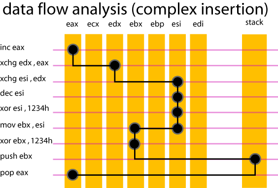

Date de publication : 20 avril 2008 00h40
Auteur : BeatriX
4 . Obfuscation.
A l'heure actuelle, il est difficile de se faire une idée complète des techniques d'obfuscation. Il existe bel et bien des tentatives de classification mais je n'en ai pas vu une qui se prétendait exhaustive. D'après mes quelques lectures, on peut quand même entrevoir 4 grandes familles d'obfuscation :
- 1 . Le cryptage/décryptage à la volée utilisé par exemple dans les virus polymorphiques.
- 2 . L'insertion de code souvent appelé junk code, dummy code, garbage code.
- 3 . Le réagencement du code source par instruction ou par bloc d'instructions (loop unrolling, jump linking).
- 4 . La mutation de code fonctionnant par dictionnaire (utilisée par exemple dans les virus métamorphiques) ou alors fonctionnant par VM embarquée.
Avec le YO-bfuscator1, nous sommes en présence de deux catégories : l'insertion de code et le réagencement de code. Pour ce qui est du réagencement de code (reordering code), Yolejedi ne l'a pas utilisé ici de façon automatique mais l'a déjà employé dans un défi précédent appelé meloquynthe.(il s'agissait de ce que j'appelle ici "jump linking"; les instructions sont mélangées et liées les unes aux autres par des sauts). Je vais développer ici l'insertion de code qui est la seule technique d'obfuscation qui pose problème.
La famille d'insertion de code est très vaste. Voici une tentative de clarification de cette famille selon une approche dynamique du problème. Cette hiérarchie sera différente pour une approche statique !
================================================================== = = INSERTION CODE (vu selon une DYNAMIC DATA-FLOW ANALYSIS (DDFA)) = ================================================================== 1.Simple insertion - dummy code 1.1 Any instruction ( qui n'affecte pas le context local ) 1.2 Extension of condition (instructions de branche conditionnelles imprévisibles) 1.3 code specific insertion (instructions de branche artificielles) 2.Complex insertion. 2.1. Exchange of equivalent fragments (qui affecte le context local) 2.1.1. Register reassignment 2.1.1.1. single path 2.1.1.2. multiple paths 2.1.2. Idiom substitution (mutation) 2.2. Reversible operation (qui affecte le context local) 2.3. environment specific insertion (detection d'émulateur ou de débuggueur) 2.4. opaque constructs (qui affecte le context local) 2.5. stealth constructs.
Dans son principe, l'insertion de code est très simple : elle consiste au moment de la compilation d'insérer un bloc d'instructions aux endroits spécifiés ou entre chaque instruction du code source. De la complexité du code inséré dépendra la résistance de l'obfuscation. Je vais montrer par quelques exemples chaque type d'insertion et ses implications sur l'analyse. Mais avant cela, je vais définir quelques termes utiles pour la suite.
4.2. Contexts locaux.
Une insertion de code peut se schématiser de la façon suivante :
Avant insertion de code : mov eax, 0bea2004h add eax, 4h Après insertion : mov eax, 0bea2004h inserted code add eax, 4h
Au moment où le compilateur insérera le code, il devra être capable de savoir sur quels registres il peut travailler. Ceci dépend bien évidemment des instructions qui vont entourer ce code inséré. Dans notre exemple, nous dirons que le context local se réduit à {eax} qui est le seul registre mis en jeu. Dans le cas où le code inséré n'utilise pas du tout {eax}, on parlera d'une "insertion simple", dans le cas contraire, on parlera d'une "insertion complexe".
4.3. Simple paths et multiple paths
Dans le cas d'une insertion complexe, le context local est utilisé. Si nous reprenons l'exemple ci-dessus, le code complexe inséré utilisera {eax} et fera prendre à la valeur contenue initialement dans ce registre un chemin (path) plus ou moins complexe. Voici une petite illustration d'une analyse de data-flow qui piste la valeur contenue dans eax.

La valeur contenue initialement dans eax est restituée dans eax après cette séquence. Le tracé noir représente le "path" suivi par cette valeur. Jusqu'au "mov ebx, esi" on parle de "simple path". A cause de ce dernier "mov", deux registres contiennent désormais la valeur pistée : ebx et esi. Il s'agit ici d'une intersection que l'analyseur de data-flow doit prendre en compte sous risque de perdre la trace de la valeur pistée. On parle dans ce cas de "multiple path".
4.4. Simple insertion : dummy code ou garbage code
C'est la manière la plus simple d'introduire du code entre deux instructions. Elle utilise des registres qui n'appartiennent pas au context local et n'affecte donc pas le programme localement. Nous pouvons facilement montrer une telle insertion :
mov eax, 0bea2004h inc ebx shl ebx, 1 add eax, 4h
Le context local ici est réduit à {eax} et le code inséré n'utilise que ebx. Ce genre d'obfuscation est problématique si on ne connaît pas le context local mais ne résiste absolument pas à une analyse de data-flow dans le cas contraire. Si l'analyste ne se focalise que sur {eax}, il ne voit pas apparaître le junk code inséré dans sa recherche. YO-bfuscator1 utilise massivement ce genre de junk. Que ce soit les instructions d'opérations ou les instructions de branche, cette protection n'offre aucune résistance si on connaît le context local. Dans une approche statique, les instructions de branche sont un vrai problème puisqu'elles multiplient de façon artificielle le graphe de contrôle. Voici une séquence assez pénible en analyse statique (invisible en dynamique) :
0056E906 jmp 56E91Ch 0056E91C jnc 56EAF8h 0056EAF8 jmp 56ED23h 0056ED23 jns 56EA98h 0056EA98 jmp 56E971h 0056E971 jno 56EDE0h 0056EDE0 jmp 56EDA1h 0056EDA1 jnl 56EA53h 0056EA53 jmp 56EE85h 0056EE85 jg 56EB32h 0056EB32 jmp 56EEA6h 0056EEA6 jp 56E9F3h 0056E9F3 jmp 56EC1Bh 0056EC1B ja 56EEC1h 0056EEC1 jmp 56EA29h 0056EA29 jne 56EE6Eh 0056EE6E jmp 56EECFh
Les sauts conditionnels nécessitent une étude approfondie de EFLAGS.
Ce genre d'insertion est ce que j'ai appelé "2ème protection" dans mon introduction. Dans une approche dynamique, elle est complètement invisible et n'apparaît donc pas dans le résultat de l'analyse.
4.5. Complex insertion
Nous entrons ici dans le vif du sujet. Une fois les "simple insertion" éliminées, il reste encore la "1ère protection" qui, contrairement à la seconde exploite le context local en créant un "path" pour la valeur pistée.
Register reassignment
Technique illustrée dans le paragraphe 4.3, elle offre une certaine résistance : c'est elle qui crée le "path". Pour la contourner , on peut demander à l'émulateur de ne pas logguer les instructions de transfert (xchg, mov, push , pop) et de ne se focaliser que sur les instructions arithmétiques, logiques, "shift et rotate" et certaines instructions inclassables comme "LEA". Je rappelle l'exemple de l'introduction :
================================================= = = COMPLEX INSERTION - REGISTER REASSIGNMENT = ================================================= 0056C763 push 0h 0056DE51 call 401078h =========> GetModuleHandleA : Main 0056DE56 xchg eax, esi <----- TRANSFERT 0056E40C inc esi 0056E8EE mov edi, esi <----- TRANSFERT 0056E8FF xchg ebp, edi <------ TRANSFERT 0056EECF xchg eax, ebp <------ TRANSFERT 0056EED8 dec eax 0056EED9 mov dword ptr [49379Ch], eax ===================================================================== = = COMPLEX INSERTION - suppression des instructions de transfert = ===================================================================== 0056C763 push 0h 0056DE51 call 401078h =========> GetModuleHandleA : Main 0056E40C inc esi 0056EED8 dec eax 0056EED9 mov dword ptr [49379Ch], eax
Malgré la suppression des instructions de transfert, il reste encore une difficulté. Les instructions d'opérations qui subsistent ne travaillent pas sur les mêmes registres et pour cause. C'est une petite difficulté à prendre en compte dans le cas général.
Idiom substitution
Cette technique est communément appelée mutation de code. A l'aide d'un dictionnaire, on remplace une instruction par quelque chose d'équivalent. En l'absence de connaissance de ce dictionnaire et suivant la taille de ce dernier, l'analyse de data-flow reste difficile. Voici par exemple ce qu'on peut voir dans le crackme :
00457F28 inc ebx 00457F26 not ebx 00457209 neg dword ptr [esp] [...] 00451A06 dec ebx 00451A04 neg ebx 00451359 not dword ptr [esp]
Ici, on exploite une relation entre les instructions "NEG" et "NOT" que je rappelle ici :
- NOP = NOT(NEG(x+1))
- INC x = NEG(NOT(x))
- DEC x = NOT(NEG(x))
Le code précédent sera donc réductible par un :
ADD ebx, 2 SUB ebx, 2
Reversible operation
Technique qui pose encore un problème si elle est combinée à de la mutation. Dans le cas où elle est utilisée seule, cette technique devient très fragile car nous voyons apparaître des "axes de symétrie" comme ici :
00453274 xor ebx, 4CC12Ch 0045376A xor edx, 4CC12Ch [...] 00443392 inc ebx 00443F5A dec ebx [...] 00444C27 sub edx, 4AB2B6h 004459C7 add ebx, 4AB2B6h
De façon plus subtile (sans doute à cause d'une mutation de code), le crackme utilise également des instructions "moins" symétriques qu'on pourrait qualifier de "complémentaires" :
0044EEA3 ror ecx, 0A9h 0044F55E rol ebx, 0C9h [...] 0044FA8F ror edx, 3Eh 004506C6 ror ebx, 62h
Ces deux séquences correspondent à ceci :
ROL ebx, 20h ROR ebx, 0A0h
environment specific insertion (detection d'émulateur ou de débuggueur
Ce crackme n'utilise aucune séquence d'instruction pour détecter la présence d'un émulateur ou d'un débuggueur spécifique. On peut détecter la présence d'un debugger comme SoftIce (syser ?) ou d'un émulateur comme VirtualPC ou VMWare par quelques lignes et une interruption bien placée. Avec l'instruction "rdtsc", on peut également détecter la présence d'un débuggueur.
Opaque constructs.
Voici une technique redoutable dans une analyse de data-flow. Si au cours de l'analyse, le context local est étendu,c'est-à-dire qu'un autre registre est utilisé dans une opération, nous sommes face à deux possibilités :
- 1 - L'instruction qui étend le context local est une instruction du code source
- 2 - L'instruction qui étend le context local est une instruction d'obfuscation issue d'une construction opaque
Voici un exemple de construction opaque dans le crackme étudié :
0043D0DF rol ebx, 0D1h 0043DFF2 rol ebx, 0AFh 0043E67E sub ebx, edi <----- Construction opaque 0043EEB2 lea edi, dword ptr [edi+ecx] <----- Construction opaque 0043F4FE neg ebx 004406D1 not ebp 004406D3 add ebp, 1h
On voit qu'en 43E67E, une opération est réalisée entre le registre pisté "ebx" et le registre supplémentaire "edi". De même, en 43EEB2, au contenu du registre pisté "edi" est ajouté le contenu de "ecx". A priori, nous n'avons pas la possibilité de savoir ce que sont ces deux registres edi et ecx. En faisant une seconde analyse de data-flow sur ces registres, on constate que edi == 1 pour la première instruction et ecx == 1 pour la seconde instruction. On peut donc interpréter ces deux lignes comme suit:
0043E67E dec ebx 0043EEB2 inc edi
Ici, l'usage d'une telle obfuscation est relativement timide et se compte sur les doigts d'une main. Elle est donc facile à supprimer...et si on avait ceci multiplié par 1000 ?! à voir dans un futur crackme !
Stealth constructs.
Voici une autre technique d'obfuscation difficile à aborder. Ici, il s'agit d'insérer des instructions qu'on va confondre avec du code source. Seule une analyse globale du binaire peut nous révéler l'inutilité de telle portion de code. On peut donc envisager des parties entières du programme complètement inutiles qui remplissent des espaces mémoires avec des valeurs bidons, qui réalisent des comparaisons qui ne serviront pas ou qui testent des conditions toujours vraies ou toujours fausses. On obtient dans ce dernier cas des portions de code qui ne seront jamais exécutées (dead code) et qui prennent de la place pour rien. On peut même envisager des appels à des fonctions de l'API windows juste pour brouiller les pistes. Yolejedi a utilisé cette technique et l'a sans doute réalisé manuellement. Cette insertion a été faite dans la routine de vérification du serial :
; ============================================= ; ; Vérification du serial ; ; ============================================= 0043901A mov ebx, 6964654Ah 0043A318 mov edi, 409078h loc_0043B7ABh: 0043C9D2 mov al, byte ptr [edi] 0043E007 or al, al 0043E009 je loc_449C3Ch 0043F4FC xor ecx, ecx 004406E9 mov cl, 8h loc_00441B72h: 00442D3B xor bl, al 004444FB ror ebx, 1h 00445E7C dec ecx 00445E7D jne loc_441B72h 004472B9 inc edi 0044859C jmp loc_43B7ABh loc_00449C3Ch: 0044AD47 xor ebx, 0AB979C82h 0044D23C div ebx <-------------------- doit déclencher une exception de type divide error #DE ; ============================================= ; ; stealth code ajouté ; ; ============================================= 0044F564 xor eax, 0C58A46F7h 004506D6 or ebx, eax 00451A07 ror ebx, 5h 00455896 inc ebx 00457F2E and eax, ebx 004585DC not eax 0045A3A9 cmp ebx, eax <--------- Comparaison non testée !
Ces instructions sont sans aucun doute des instructions du code source avant obfuscation automatique mais ce sont quand même des leurres ! On peut facilement imaginer qu'une utilisation massive de ce genre de technique rend la recherche de "program points" très difficile. D'ailleurs la preuve en est, j'ai dans un premier temps cru à tort que cette comparaison faisait partie du code source initial.
voici un autre exemple qui s'avère être un "stealth code" pour une analyse dynamique mais qui est sans nul doute une construction opaque pour une analyse statique :
00465D65 mov ecx, 46B40Eh 00467266 inc ecx 0046965E jmp near ecx
Le "jmp ecx" n'est pas différenciable d'un vrai jump par une mesure de delta. Il est donc considéré comme un program point potentiel. Après un back-stepping sur ecx, on constate qu'il n'y a aucune condition de réalisation de ce saut. Il s'agit donc d'un "faux positif" si j'ose dire.
Ma conviction est que ce petit bout de code a été posé manuellement par Yolejedi en tant que construction opaque pour perturber une éventuelle analyse statique
Copyright (C)- FRET (2008)